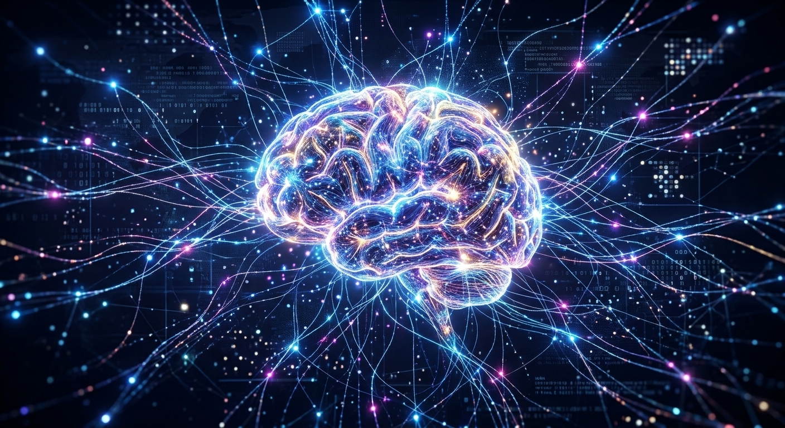

MIS & AI EthicsCorrect AI UsageAlexander GonzalezOctober 27, 2026Correct AI UsageI believe that AI should be used as a tool that can help us learn and understand things better than anything. The best use of AI would be to use it as a template or as a guide in your learning process. It should be used to help you understand things when you are confused and it should also be used to help you stand out any mistakes you might have made. It should basically only be double-checking your work instead of doing it for you. AI Evaluation & critique Your reasoning is strong and aligns well with academic integrity standards, as using AI as a personal guide and error-checker encourages active learning while preventing over-reliance. However, relying on AI strictly as a double-checker at the end of a project may slightly underutilize its capabilities. An alternative perspective suggests that AI can also serve as an effective co-creator during early brainstorming stages to help discover new viewpoints or outline complex ideas. As modern industries demand high AI literacy, learning how to actively collaborate with technology—rather than solely using it for final revisions—is an essential skill for future professionals. Benefits of AI
Who Benefits?
How AI Tools Used
Incorrect AI Usage
In my opinion, I think AI is a great tool that can facilitate the learning procress. There are so many incredible uses of AI that can help those who might struggle to understand simple things. However, I do think that AI can be misused incredibly. Many use AI to do all their work and gain no new undertandings from anything their are being taught. |